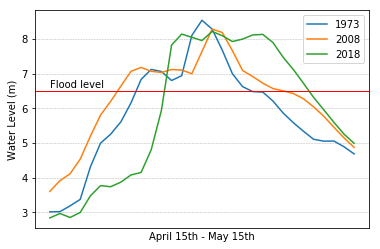

Looking at Fredericton flood data
This has been first spring in Fredericton, and thus my first experience with the annual flooding of the Saint John River. I was interested in the reports of people caught by surprise by this year’s flood and the comparisons to the previous big flood 10 years earlier.
I found data on the water levels in Fredericton from the Government Water Office site which included historic data and real time data for the current year. Given that I was also looking for something to play with Jupyter and Pandas, I started to play.
It seemed that the data supported people’s surprise about the rising waters. Compared to the previous big floods of 1973 and 2008, this year began later and climbed quicker. The other years also seemed to plateau slightly above flood levels, then spiked to a peak, and dropped off from that peak quite quickly. 2018 climbed steadily to a high level and has maintained that level for a few days.

Here’s the notebook showing my work.